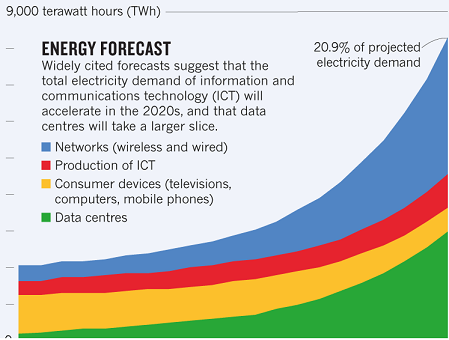

What is Client Side Solutions ?
Client Side Solutions is a personal project that aims to provide simple yet powerful tools regarding the analytical space.
You will find on this website tools & services that can be used right away. Play with it and explore the capabilites of "C.S.S".
A documentation is available here for more informations about the various displayed apps
Keep it mind that these showcased applications were meant to tackle predetermined tasks for demonstration purpose.
Therefore, they can be tuned to better fit similar needs you might have.
Why Client Side Solutions ?
Client Side Solutions : Working on the client side.
It's easier for companies to sell server based software: You take your customer's data and you keep the code.
Meaning that while you provide a service, the end product does not entirely belong to your customer. If interested, he is forced to create an account / subscribe to your services
On the other end, some people needing these tools might be left out:
Server based solutions might not be allowed by their IT environment : forbidden to transfersensitive data, not enough IT maturity, lack of programming skills.
Last but not least: While the server based approach enables complex analytic operations, it is often overkill regarding the targeted task. Wasting energy and unecessary ressources:

How does Client Side Solutions work ?
Client Side Solutions : Working on client side.
Put it simply : when you are visiting a website, your computer is doing some work to render what you are seeing.
Client Side Solutions just ask him on top of that, a little extra-work to perform the required task.
For simple tasks as showcased here : no need to spend more energy powering up distant servers to achieve what is needed.
No need to send (sensitive) data far away: everything stay in your computer.
And you keep the code: all the code. Your data is safe and the code fully auditable.
For who is Client Side Solutions meant ?
- People who want to explore analytic and digital solutions without entering complex and cumbersome solutions
- People with limited IT ressources : either because of strict IT constraints or lack of IT ressources
- Hobbyists who wants to play with data and simple analytic solutions without having to spend time installing lots of dependancies / creating an account for a cloud service they won't use 2 month later.
Try the showcased applications. Your needs might be solved by solutions much simplier than what you thought.
About me
Experienced data scientist, I have worked in insurance and asset management.
I am currently lucky to have at my disposal all the IT ressources I need to quickly put in production analytical projects I am working on
But it has not always been the case. Hence this side project: to find the light even through the darkest of times.
Forbidden to use any programming languages besides MS office = Excel is the only solution ? Nope !
For any feedbacks or enquiries, contact me with the following links: